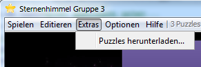
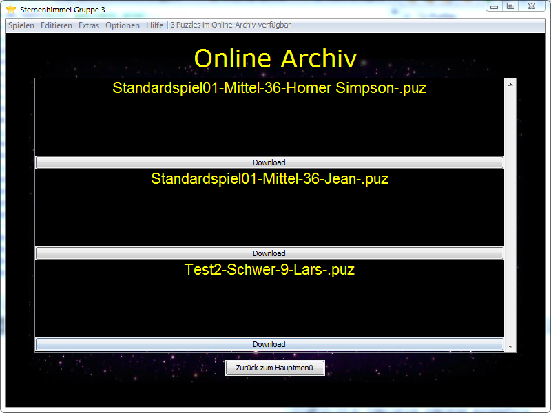

Über das Menü "Extras - Puzzle herunterladen" können online gespeicherte Puzzle, die von anderen Spielern erstellt wurden, heruntergeladen und gespielt werden.

Es werden alle online verfügbaren Puzzle in einer Liste angezeigt.

Durch betätigen der Schaltfläche "Download" unterhalb eines Puzzles wird dieses heruntergeladen und mit einem Dialog bestätigt. Das geladene Puzzle lässt sich über das Menü "Spielen - Neues Spiel..." starten.
Created with the Personal Edition of HelpNDoc: Easily create PDF Help documents